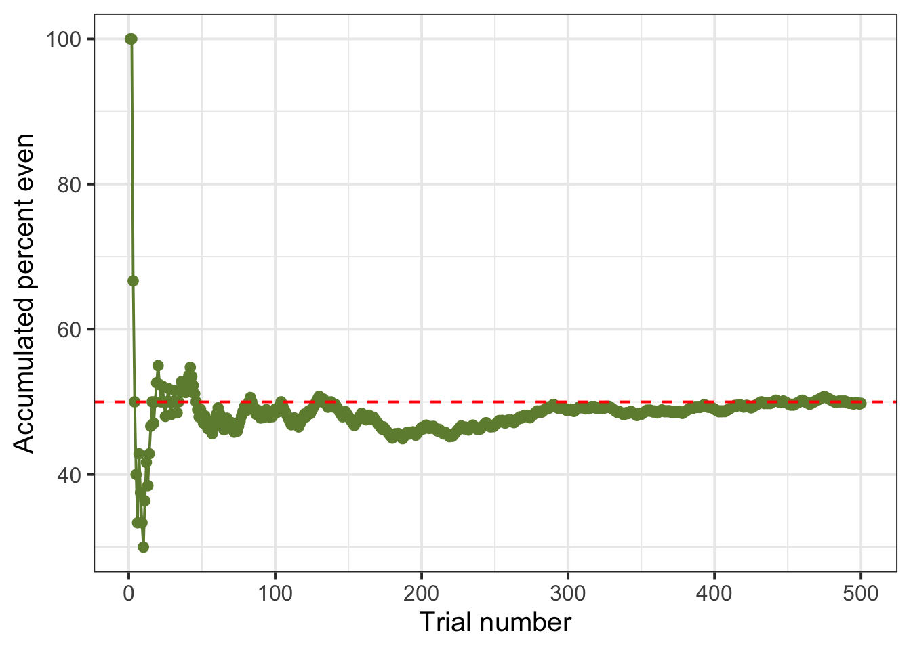

library(tidyverse)Introduction to probability
Think about flipping a coin once. Can you predict the outcome?
Think about flipping a coin many times, one million say. Are you able to predict roughly how many heads or tails will show up?
It’s hard to guess the outcome of just one coin flip because the outcome could be one of two possible outcomes. Hence, we say that flipping a coin is a random experiment or random process.
If you flip it over and over, however, you can predict the proportion of heads you’re likely to see in the long run. In the long run simply means if you were to repeat the same experiment over and over many times under the same conditions.
This discussion leads us to define the specific type of randomness that we will be studying in this course.
Note
What is randomness?
We will say that a repeatable process is random if its outcome is
- unpredictable in the short run, and
- predictable in the long run.
It is this long-term predictability of randomness that we will use throughout the rest of the course. To do that, we will need to talk about the probabilities of different outcomes and learn some rules for dealing with them.
Video activity
Please watch the following video, explaining you to the concept of “randomness”.
Random experiments and probability
Example 1: Flipping a coin
The process of flipping a coin is an example of a random experiment as its outcome is uncertain. We do not know beforehand whether the coin will land heads (H) or tails (T).
The collection of all possible outcomes is known as the outcome space or sample space. We typically denote the sample space by \(S\). In the coin example, this is: \[ S = \{ H, T \} \]
One particular repetition (i.e. instance) of such experiment is known as a trial.
Example 2: Throwing a die
Another example of a random experiment is throwing a six-faced die as, for each trial, we can not exactly predict which face will appear.
The list of possible outcomes for the die experiment is \(1, 2, ..., 6\). Hence, the sample space can be written: \[ S = \{1, 2, 3, 4, 5, 6 \} \]
Events
Consider again the die experiment. Often, we are not interested in the probability of observing a particular outcome, such as 3, but rather in a collection of outcomes together. For example, we might be interested in the probability of observing an even number.
Such collections of outcomes are called events. More formally, an event is a set of outcomes.
Each individual outcome is also considered an event. To distinguish, some people call simple events the individual outcomes, and compound events a collection of two or more outcomes.
The event “an even number appears” is simply the collection of even outcomes. We could call it “E” for “even” and write it as: \[E = \{ 2, 4, 6\}\]
Two important events are:
- the empty set: the set of no outcomes, denoted \(\emptyset\);
- the sample space: the set of all outcomes, denoted \(S\).
In general, a finite sample space is written \[ S = \{s_1, s_2, ..., s_n\} \]
where each \(s_i\) represents an outcome or simple event.
Example 3: Flipping 2 coins
Consider flipping 2 coins simultaneously. The sample space is: \[ S = \{ (H,H), (H,T), (T,H), (T,T)\} \]
Typical events could be:
- Observing tails at least once, \(A = \{(H,T), (T,H), (T,T)\}\)
- Observing the same face twice, \(B = \{(H,H), (T,T)\}\)
Defining probability
Consider repeating the random process of throwing a die many times, 500 say, and recording whether or not an even number appears. We will now create a table listing the result of each trial.
First, we load the tidyverse package:
Next, we create the sample space:
S <- 1:6
S[1] 1 2 3 4 5 6The following code defines the event “an even number appears”:
E <- c(2, 4, 6)
E[1] 2 4 6Say, now, that the outcome of a roll is 3. How can we check whether the outcome belongs to the event of interest \(E\)?
We can use the %in% function to ask R: “Is 3 in E?” The answer can be TRUE or FALSE.
3 %in% E[1] FALSESuppose instead, that the outcome of a roll is 2. Is 2 in E?
2 %in% E[1] TRUEWe now specify how many trials we will be performing:
num_trials <- 500Next, we repeat the experiment num_trials times and compute the accumulated percentage of even outcomes:
experiment <- tibble(
trial = 1:num_trials,
outcome = sample(S, num_trials, replace = TRUE),
is_even = outcome %in% E,
cumul_even = cumsum(is_even),
cumul_perc_even = 100 * cumsum(is_even) / trial
)The following code displays the top 10 rows of the experiment:
head(experiment, n = 10)# A tibble: 10 × 5
trial outcome is_even cumul_even cumul_perc_even
<int> <int> <lgl> <int> <dbl>
1 1 2 TRUE 1 100
2 2 6 TRUE 2 100
3 3 3 FALSE 2 66.7
4 4 1 FALSE 2 50
5 5 1 FALSE 2 40
6 6 5 FALSE 2 33.3
7 7 2 TRUE 3 42.9
8 8 3 FALSE 3 37.5
9 9 5 FALSE 3 33.3
10 10 1 FALSE 3 30 Understanding the code. Let’s inspect each column in turn:
trialrecords the number of each trial: 1, 2, …, 500;outcomelists the result of each trial: 1, or 2, …, or 6;is_evenchecks whether the outcome of each trial belongs to the event \(E\) (=TRUE) or not (=FALSE);cumul_evencomputes the cumulative sum ofis_even.
As we saw, the is_even column contains either TRUE or FALSE. This was created with the function %in%, which is equivalent to asking a question: Is the outcome in \(E\)? The result will be either TRUE or FALSE. We note that, when summed, R considers a TRUE as 1, and a FALSE as 0. For example, the cumulative sum of c(TRUE, FALSE, TRUE, TRUE, FALSE) is c(1, 1, 2, 3, 3). Finally, the column cumul_perc_even computes the accumulate percentage of even outcomes.
The first trial’s outcome was 5, which is not an even number. Hence the cumulative percentage of even outcomes is 0 out of 100, or 0%. The next four trials lead to 2, 4, 4, and 2 respectively, which all are even numbers. The cumulative percentages will be 1 out of 2 (50%), 2 out of 3 (66.67%), 3 out of 4 (75%), and 4 out of 5 (80%). Next, we observe 3, which is odd, hence the cumulative percentage of even outcomes is now 4 out of 66.67%, and so on.
Finally, we plot the accumulated percentage of even numbers against the trial number:
ggplot(experiment, aes(x = trial,
y = cumul_perc_even)) +
geom_point(color = 'darkolivegreen4') +
geom_line(color = 'darkolivegreen4') +
geom_hline(aes(yintercept = 50), color = 'red', linetype = 2) +
labs(x = "Trial number", y = "Accumulated percent even")
As the number of trials increase, we see that the curve approaches 50%, which is 0.5, and that the cumulative percentage of even outcomes keeps fluctuating around 50%.
NoteCheckpoint
What’s the probability of obtaining an even number when throwing a fair die?
TipAnswer
If you answered 0.5 (or 50%), then you are on the right track!
Based on the graph, it looks like the relative frequency of an even number settles down to about 50%, so saying that the probability is about 0.5 seems like a reasonable answer.
But do random experiments always behave well enough for this definition of probability to always apply? Perhaps the relative frequency of an event can bounce back and forth between two values forever, never settling on just one number?
The law of large numbers
Fortunately, Jacob Bernoulli proved the Law of large numbers (LLN) in the 18th century, giving us the peace of mind that we need.
Note
Law of large numbers
The law of large numbers (LLN) states that as we repeat a random experiment over and over, the proportion of times that an event occurs does settle down to a single number. We call this number the probability of that event.
However, it is not that simple. The LLN requires two key assumptions:
- Identical distribution: The outcomes of the random experiment must have the same probabilities of occurring in each trial. That is, we can not have in trial 1 a 50% chance of observing an even number, and then a 80% chance in trial 2. The underlying chance needs to be the same. This is accomplished by not changing the random experiment we are studying, the repeated trials must happen in the same conditions.
- Independence: The outcome of one trial must not affect the outcomes of other trials.
For the die experiment, we can now write that the probability of observing an even number is 0.5 as follows. First, we need to define the event of interest, \(E = \{2, 4, 6\}\), and then we can write: \[ P(E) = 0.5 \]
If you do not give a name to the event, you must specify it inside of the parentheses. Note the use of round parentheses for probability \(P()\) and the curly brackets to list the outcomes of interest. \[ P(\{2, 4, 6\}) = 0.5 \]
We reached this definition of the probability of the event \(E\). In the long run, \[ P(E) = \frac{\text{number of times outcome was in the event } E}{\text{total number of trials}} \]
NoteNotation
We typically use the first few capital letters of the alphabet to name events. The letter \(P\) will always be reserved for probability.
When we write \(P(A) = 0.5\) we mean “the probability of the event \(A\) is 0.5”.
We use proportions (or decimal numbers) when reporting probability values in a formal situation like writing a report or a paper. However, when discussing probability informally, we often use percentages.
If you flip lots of “tails”, are you more likely to get “heads” next?
You might have heard from friends or TV shows that sometimes the random experiment “owes” you a particular outcome. Let’s try to entangle this in more detail and understand where the pitfall of this reasoning is.
The law of large numbers tells us that the probability of an event is the proportion of times we would observe it in the long run. The long run is really long - infinitely long. We, as humans and finite entities, can not generate an infinitely long sequence of trials and memorise it.
Many people believe that if you flip a fair coin, where fair means that the chance of getting heads is the same as the chance of getting tails (0.5) we expect the coin to “even out” the results in the coming trials if heads has not appeared in the recent ones.
Say, for example, that in 10 trials you only observed 1 head. This is quite a low proportion, 0.1 (1 out of 10) compared to the 0.5 (5 out of 10) that the player expected. Does this mean that the coin due to show heads in the near future, as the coin “owes” us some heads to even out the proportions?
The answer is no.
The long run means that the proportions will eventually even out in the infinite sequence of trials, but you will not know when this happens and there is absolutely no requirement for the coin to show heads again in the upcoming trials in order to keep a probability of 0.5.